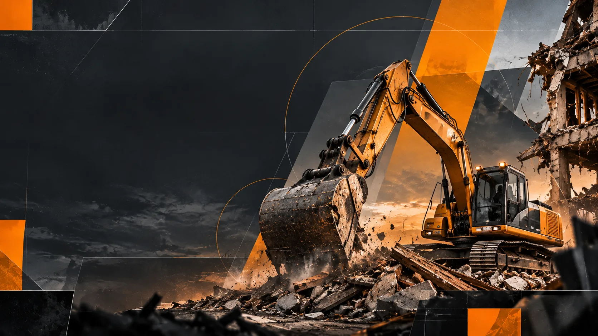

Что проверяют
- Несущие конструкции и устойчивость частей здания
- Действующие инженерные коммуникации
- Соседние строения и подъезд техники
- Правовой режим объекта и необходимость документов
Последовательность работ: от оценки строения до согласованного состояния участка после демонтажа.
План позволяет контролировать решение на каждом этапе, а не только результат.
Адрес в Истринском округе, тип объекта, фото, площадь и что важно сохранить.
Оценка строения, прилегающих объектов, сетей, подъездов и иных ограничений.
Выбор ручного или механизированного метода и границ удаления конструкций.
Согласование перечня, сроков, вывоза и того, что не включено.
Последовательный демонтаж по принятому плану с соблюдением требований безопасности.
Контроль выполнения и согласованной очистки участка.
Ключевые условия заранее фиксируются, чтобы не допускать опасных допущений.
Техническая схема является информационной. Конкретные работы требуют оценки объекта и соблюдения действующих норм.
Да, наличие и состояние действующих сетей необходимо проверить до работ. Отключение выполняют уполномоченные лица и организации.
Возможность зависит от безопасности, расстояний и метода демонтажа. Иногда требуется ручная разборка или дополнительные меры защиты.
В согласованных условиях после осмотра и определения состава работ.
Зависит от статуса объекта и конкретной ситуации. Перед началом необходимо проверить применимые требования.
Процесс / техника / контроль: иллюстративный материал
